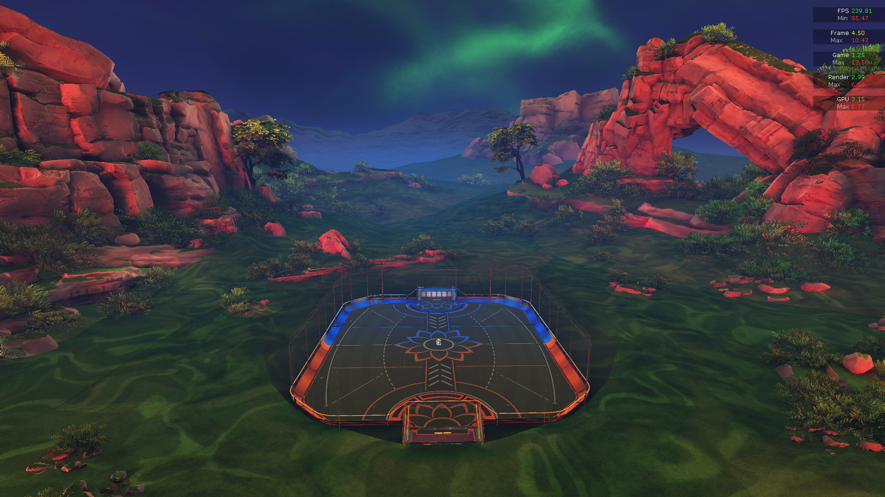

Software Engineering Intern – Phillips May 2022 – August 2022
HealthTech– Languages and Technologies: Java, Agile, Spring, REST, Postman, RabbitMQ, Gradle, Swagger, Jira, Rally
Pittsburgh, PA
- Developed and Remediated 50+ component and integration tests via a proprietary Cake framework, an integration and end-to-end testing framework that simplifies REST API tests for Care Orchestrator.
- Achieved a 75% decrease in failing and flaky tests in the Cake end-to-end repository.
- Participated in Agile software practices such as, Scrum Teams, PI Planning, 2-week Iteration Planning, Retrospective, and Review.
- Debugged issues regarding search queries in GLADOS, a tracking software for test results
- Worked on the Candy Mountain Autonomous Testing Team and collaborated with a team of 14 Software Engineers, Architects, and managers to improve the Care Orchestrator CI/CD Pipeline.
- Completed 3 features on the Notification Service resulting additional REST endpoints, RabbitMQ handlers, and a Redis Locking Mechanism to prevent simultaneous calls to POST and DELETE functionalities. Code was tested using Postman, JMeter, and Junit.
Software Engineer Intern Summer 2023 - In Progress...
QikRoutes - GitHub Repository - May 2022 – August 2022
Languages and Technologies: Java, JavaFx, ARCGIS, Gradle, Git, Google Cloud VM
- Streamlined a backend algorithm to parse a JSON-formatted Kaggle dataset of 10000+
airports and generate practical routes between airports to minimize the time complexity when
searching for the shortest path.
Implemented a graph data structure to store each airport, as well as Dijkstra’s Algorithm to find the shortest path (km) between an arbitrary chosen airport A and B.
Co-created a JavaFX UI with auto-completing drop-down boxes for a user-friendly experience when searching for airports as well as the ARCGIS API to allow the user to visualize the route on a full world map.
Facilitated active communication between 4 students to effectively collaborate and plan this 3-week long project.
Practiced Test-Driven Development to simplify the process of merging code using Git and the Google Cloud VM.
Unsupervised Learning/Computer Vision Project to Analyze Rocket League Replays - In Progress...